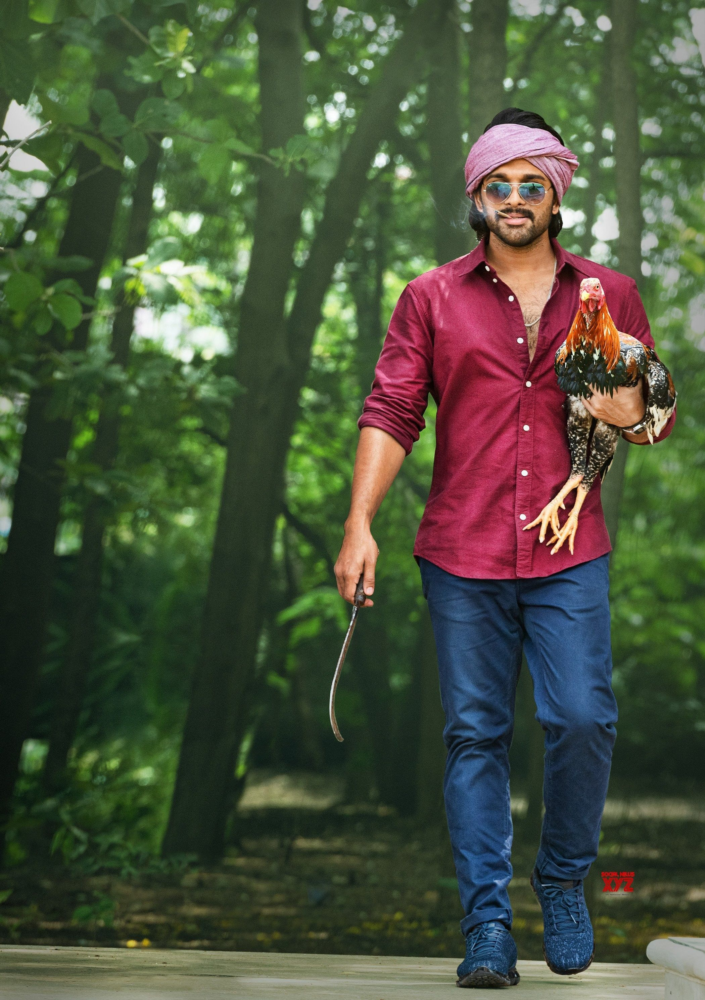
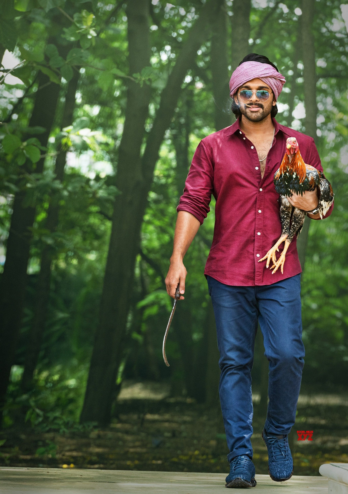
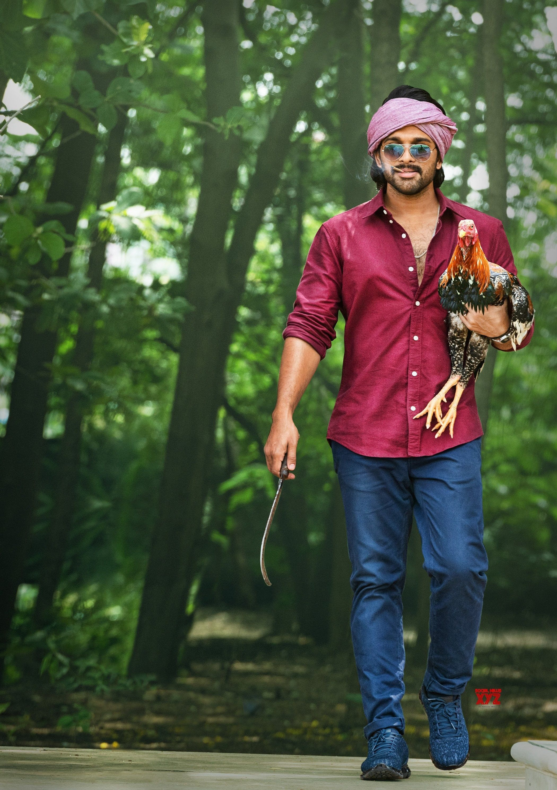

Allu Arjun (born 8 April 1982) is an Indian actor known for his works mainly in Telugu cinema. One of the highest paid actors in India,Allu Arjun is also known for his dancing skills. He is a recipient of several awards including a National Film Award, six Filmfare Awards and three Nandi Awards. He has appeared in Forbes India's Celebrity 100 list since 2014. He is popularly referred to as "Stylish Star".
